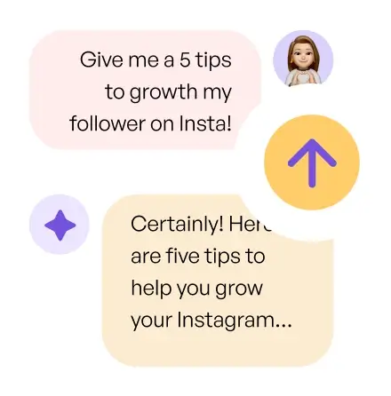

Over 4,000 5-star reviews
Social Media 10x Faster with AI
Over 4,000 5-star reviews

Manage multiple accounts and platforms.
Maintain a consistent posting schedule.

Schedule to social media.

Optimize post timings to publish content at the perfect time for your audience.

Grow followers with non-stop content.
>56% faster audience growth

Create and schedule content quicker.

Write your content using AI.
